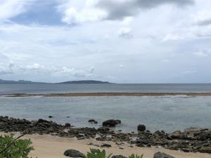
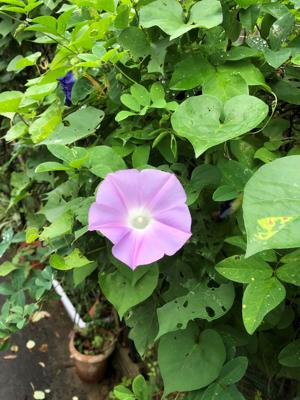
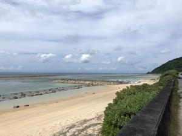

うるがいの話 ある日
最新: 介護認定【うるがいの話 ある日】とは 一日だけのプログです
『うるがいの話』の最新一日だけのプログで、通信料が少なく経済的だ。カニの画像をクリックすると全ての日付が載る『うるがいの話』サイトを表示します
|
|
【うるがいの話】 うるがい(ｳﾙｶﾞｲ urugai)とは、『もずくがに』の名前でとても大きくなります。 |
|---|---|
|
|
【カミマヤーの話】 猫のことを方言でマヤーといいます。カミマヤー（kamimayaa）とは、神の猫のことです。 |
|
【たながぁの音楽】 たながぁ（ﾀﾅｶﾞｰ tanagaa）とは手長えびのことで、何種類かあり大きいのは車 エビぐらいになります。 |

|
【ぶながぁの話】 ぶながぁ(ﾌﾞﾅｶﾞｰ bunagaa)とは、赤い髪の毛、赤い身体、そして身長は１ｍ２０ｃｍ ぐらい、川の蟹を食べているの目撃された。場所は沖縄県国頭郡大宜味村のと ある村僕の隣近所に住んでいる爺さんから、聞いた話です。 |
|
|
【ギーマの話】 ギーマ(giima)とは、山原の里山に咲くスズランに似た、 花を付けます。実は食べられます、 気が付くと口の周りが紫になっています。 |
2022年05月25日 (水）介護認定
17:08
 
ヨメのお母さんは、要支援から要介護へと認定が変わった。ヨメの指令で、今
日は私が病院へ荷物を預けに行くことになった。以前は、病院の入り口で荷物
の授受があったが、先々週から各自の病室の階へ、エレベータで上がり入口で
荷物の授受方式に変わった。２回目なので、自信たっぷりヨメのお母さんがい
る階へ上がる事ためにエレベータを捜す。お、何故か前回と違うエレベータだ
ま、いいかとそのまま乗り込み上に上がる。エレベータを降りると、前回と景
色が違う、おぇ、荷物ももったままとりあえず廊下を歩く。至る所に患者がホ
イホイいる、やがて覚えのあるナースステーションへ、急いで歩くとヨメのお
母さんが他の患者とイスに座っている。やばい！、ばれないようにと思たっが
見つかってしまった。『なんで、そこにいるの』と言われる。少し、うろたえ
歩きながら荷物を持って来たと答える。やがて、前回の受け渡し場所へたどり
つく。看護婦に荷物を届けに来ましたと話していると、お母さんが杖をつきな
がら、ゆっくり近づいてくる（うん、元気だ！）。ソーシャルスタンスを取る
よう適当に離れながら、元気そうと声をかける。家に帰りたいと言われる、さ
りげなくシカトして帰る。入院の時から数か月ぶりに会うが、かなり元気にな
っている。それはそれで良かった、来週末退院だが、次に移動する予定の病院
への入院が難しくなったと昨日連絡があった、さらに他を調整するとの話だっ
たが、どうなることやら。

１６時５７分 ビットコインの総資産 ￥１０、９３０↑